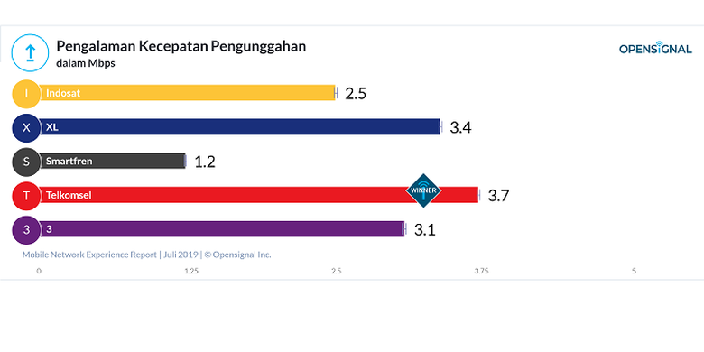

DetikCode.com |
KOMPAS.com — Perusahaan riset jaringan mobile Open Signal merilis hasil penelitianterbaru berjudul "Laporan Pengalaman Jaringan Seluler Juli 2019" untuk wilayah Indonesia. Di dalamnya, Open Signal antara lain menjabarkan kecepatan internet dari lima operator seluler Tanah Air, yakni Indosat Ooredoo, XL Axiata, Smartfren, Telkomsel, dan Hutchinson Tri (3).
Kecepatan pengunduhan di jaringan internet Telkomsel lebih cepat sekitar 2,4 Mbps dari XL yang menduduki posisi kedua dalam hal ini. Untuk upload, kecepatan rata-rata yang diraih Telkomsel adalah 3,7 Mbps, bersaing ketat dengan XL yang mencatat 3,4 Mbps di posisi kedua. Urutan ketiga, keempat, dan kelima masing-masing ditempati oleh Tri (5,2 Mbps download/ 3,2 Mbps download), Indosat (4,8 Mbps download/ 2,5 Mbps upload), dan Smartfren (4,5 Mbps download/ 1,2 Mbps upload).